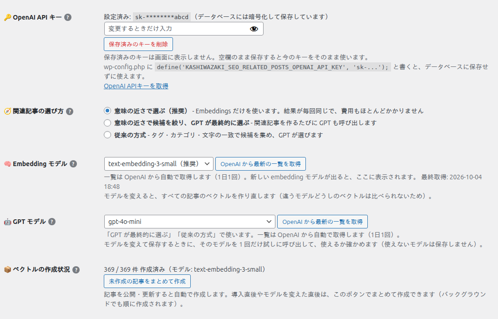
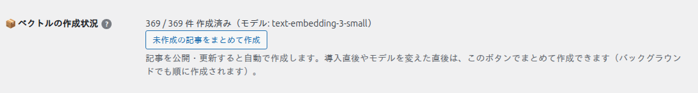
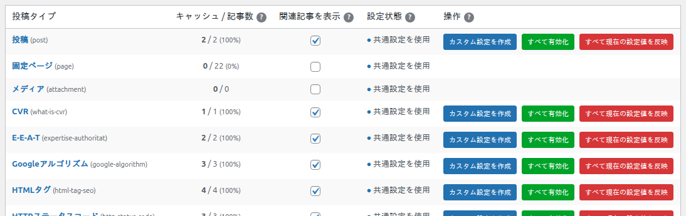

はじめての設定
インストールしてから、記事に関連記事が表示されるまでの手順です。4 ステップ、10 分ほどで終わります。

ステップ 1：プラグインを有効化する
管理画面の「プラグイン」→「新規追加」→「プラグインのアップロード」で zip ファイルをアップロードし、「今すぐインストール」→「有効化」を押します。
左メニューに「Kashiwazaki SEO Related Posts」が追加されます。クリックすると設定画面が開きます。

ステップ 2：OpenAI の APIキーを入れる
OpenAI Platform の API keys で APIキーを作ります（sk- で始まる文字列）。
設定画面の「🤖 AIのAPI設定」タブを開き、「OpenAI API キー」に貼り付けます。
「関連記事の選び方」は 意味の近さで選ぶ（推奨） のままにして、「API設定を保存」を押します。保存後は「設定済み: sk-********abcd」のように、キーの先頭と末尾だけが表示されます。

wp-config.php に define('KASHIWAZAKI_SEO_RELATED_POSTS_OPENAI_API_KEY', 'sk-...'); と書くと、設定画面で入力しなくてもそのキーを使います。
ステップ 3：記事のベクトルを作る
「意味の近さ」で選ぶには、記事ごとに内容を表す数値（ベクトル）が必要です。
同じタブの「ベクトルの作成状況」で 「未作成の記事をまとめて作成」 を押します。
「369 / 369 件 作成済み」のように、左右の数が同じになれば完了です。数百件なら数十秒で終わります。費用は数百件でも 1 円未満です。

ベクトルはバックグラウンド（WP-Cron）でも順に作られ、記事を公開・更新したときにも自動で作り直されます。ボタンは「今すぐ全部作る」ためのものです。
ステップ 4：記事で関連記事を表示する
関連記事は、記事ごとの「この記事で関連記事を表示する」が ON の記事にだけ表示されます。どちらかの方法で ON にします。
方法 A：投稿タイプの全記事をまとめて ON にする
「📋 投稿タイプ別設定」タブを開き、表示したい投稿タイプの「関連記事を表示」にチェックを入れて「表示設定を保存」を押します。
その行の緑のボタン 「すべて有効化」 を押します。その投稿タイプの今ある全記事が ON になります。

方法 B：記事ごとに ON にする
記事の編集画面の下にある「🔗 Kashiwazaki SEO Related Posts」欄で、「この記事で関連記事を表示する」 にチェックを入れて記事を保存します。

「すべて有効化」が ON にするのは、押した時点で存在する記事だけです。新しい記事を公開するときは、編集画面でチェックを入れてください。
表示を確かめる
記事を開くと、本文の後（初期設定）に関連記事が表示されます。表示形式や色は「共通設定」で変えられます。

次に読むページ
- 関連記事が選ばれる仕組み：何をもとに選んでいるか、費用はどこでかかるか
- 設定の優先順位と反映：設定を変えたのに記事に効かないときに読むページ
- 表示形式とカラーテーマ：見た目の選び方